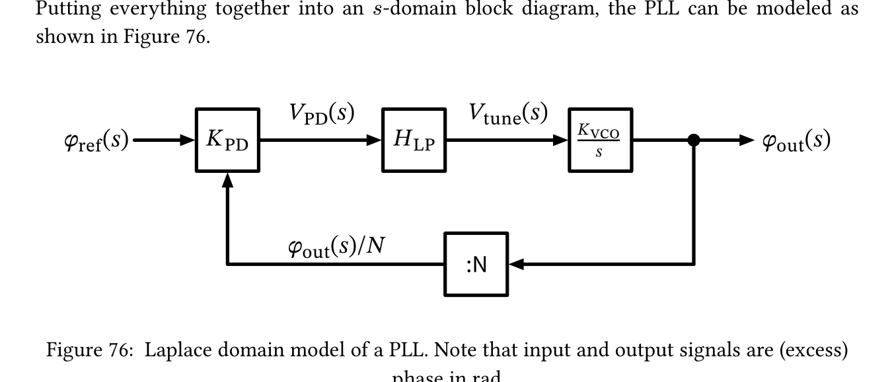

PLL A1.2 · A-INT-02 · L1 / Linearized Type-II Behavioral Model
锁之前与锁之后
给振荡器一个小频率偏差，沿着同步游标观察 ΔfVCO、ΔVCTRL 与参考减反馈相位误差怎样变化。
本课目标 区分频率误差、控制电压偏差和相位误差的单位与因果关系。约 7 分钟。
原教材先读 · JKU RFIC §7.1 / §7.2
先分清两种环路：Fig.76 是 Type-I，Fig.83 是 Type-II
两张图对应不同架构与不同传递函数。先读 JKU 原图和原式，再把它们与本页三曲线实验使用的行为模型分开。


两张原图均来自 Harald Pretl 等 JKU RFIC 课程，保持原图内容并配中文图注，依据课程 Apache-2.0 许可复用：许可证。
JKU 原式 · Type-I（Eq. 62–64）
Fig.76 中 PD、LPF 与 VCO 的相位路径形成 Type-I 模型。JKU 给出的参考相位到输出相位闭环函数为：
同一来源将自然频率与阻尼系数写为：
来源：JKU RFIC §7.1，Eq.62–64（章节原文）。量纲： 用 V/rad， 用 rad/(s·V)， 用 rad/s； 无量纲。
这是锁定工作点附近的小信号模型。JKU 指出连续时间近似通常要求环路带宽显著小于 （约低于其十分之一）；它不描述大信号捕获范围。
JKU 原式 · Type-II（Eq. 67–69）
Fig.83 的 PFD–CP 在 VCO 的积分器之外再引入一个积分环节。JKU 先明确说明：推导 Eq.67 时暂时忽略图中的 ，因此这里得到的是二阶 CP-PLL 近似。
其自然频率和阻尼因子为：
来源：JKU RFIC §7.2，Eq.67–69（章节原文）。Eq.67–69 的适用条件是忽略 。保留 的 Fig.83 实际上带有三阶滤波器。
这两组公式怎样对应到电路
Type-I 回路只有 VCO 的相位积分器 ；Type-II 的 PFD–CP 将 UP/DN 转为电流，电容再积分一次，和 VCO 积分器合起来构成两个环路积分器。Fig.83 中 引入零点以提供阻尼； 用于压低 CP 开关纹波，但提高环路阶数。
JKU 原文说明，Type-I 锁定后可以保留静态相位偏差但频率误差为零；Type-II 对相位阶跃、频率阶跃（参考相位斜坡）的稳态相位误差为零。它们不能仅凭“二阶曲线外形相似”就视为同一个系统。
单位换算：两个 口径
JKU 环路公式使用角频率增益，单位 rad/(s·V)。本页现有行为模型参数使用频率增益，单位 Hz/V。以本页后文的带下标符号区分：
这只是 的单位换算。模型读数中的控制电压偏差按 Hz/V 计算，不能把它当成 JKU 方程中的 rad/(s·V) 增益直接代入。
本课程示波器实际使用的 Type-II 近锁公式
以下公式是为这组三曲线定义的解析行为模型，不是 JKU Eq.62–64 的 Type-I 闭环，也不是把 Eq.67–69 的器件网络直接数值仿真。令初始频差为 ，且初始相位误差为零：
模型内计算单位为 in Hz, in s, in V, in rad. 页面显示时再换成 kHz、μs、mV、mrad。
参数、初始条件与可观察边界
默认值：、、、、，初始相位误差 。
以 为快速检查点：频差仍等于 ，控制偏差是 −1 mV，相位误差仍为 0。把频差改为 +100 kHz 会令控制偏差变成 +1 mV，相位误差仍从 0 开始。
这是欠阻尼解析行为模型，要求 且 。它不包括离散 PFD/CP 脉冲、捕获范围、VCO 饱和、器件噪声、SPICE 或真实芯片锁定检测。
任务与控制
范围 −200～+200 kHz；零表示无初始频差。
0–10 μs；所有曲线共享此游标。
Step 前进 0.1 μs；Restart 恢复 −100 kHz 与 0 μs。
虚拟示波器 · 三条同步曲线
L1 / Linearized Type-II Behavioral Model输出频率误差 ΔfVCO（kHz）
控制电压偏差 ΔVCTRL（mV）
参考减反馈相位误差 Δφe（mrad）
游标位置的 REF / FB 局部边沿关系
Explain · 三个不同的量组成一条因果链
本页示波器使用前面标出的本课程 Type-II 近锁行为模型。频率偏差经正 VCO 增益换成控制电压偏差；频率偏差随时间的积分形成参考减反馈的相位变化。因此频率（Hz）、控制电压（V）和相位（rad）必须分开读。
默认初始频率偏差为 −100 kHz，初始相位误差为 0，模型单位依次是 Hz、s、V、rad；图上只在显示层换成 kHz、μs、mV 和 mrad。偏差趋近零不等于相位历史被抹除，稳态仍可保留相位偏差。
模型边界：不含 PFD/CP 脉冲、器件噪声、捕获范围、VCO 饱和、Cycle Slip 或真实芯片 Lock Detect。曲线是解析行为模型，不是 SPICE 或实测数据。
来源与模型区别：JKU §7.1 Type-I 原文 · JKU §7.2 Type-II 原文。本页 Type-II 行为方程按共享 a-classroom-models.js 的独立公式实现。
来源与模型条件
原始图和方程：JKU Fig.76 / Eq.62–64；JKU Fig.83 / Eq.67–69。完整图注、公式编号、MathML 和模型边界均在本页正文对应位置给出。更多逐边沿捕获见课程 C2 / LOOP-01。